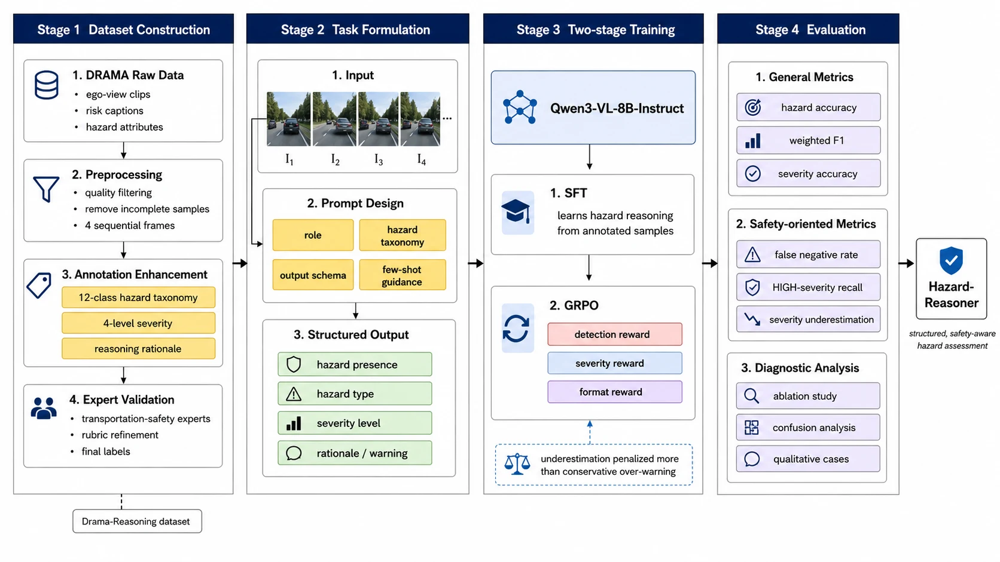
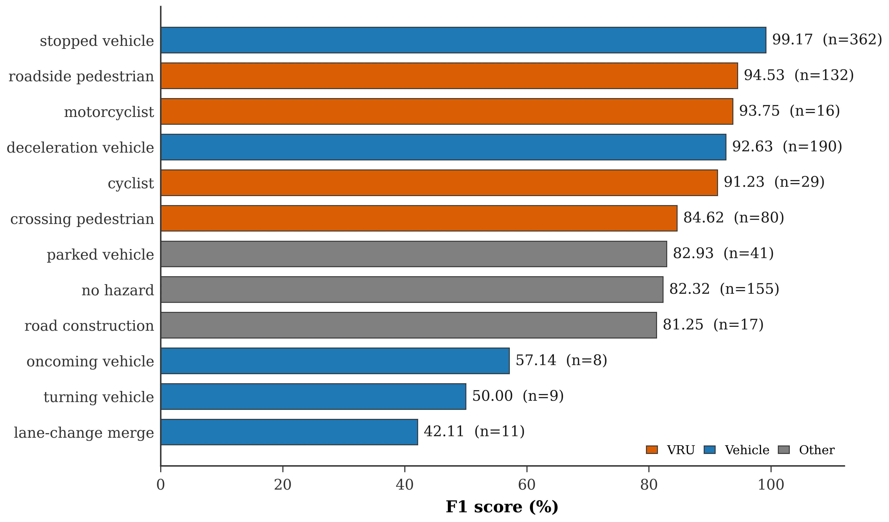
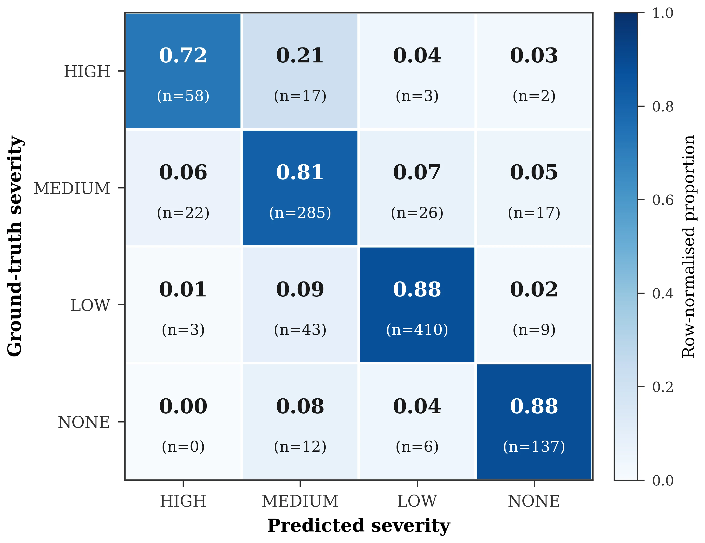

DRAMA-Reasoning
Annotations for 12,522 ego-view driving scenes from DRAMA (video frames © Honda Research Institute USA, available from HRI on request). Each scene has a hazard type, a contextual severity level, a short driver warning, and a two-part rationale.
- Scenes
- 12,522
- Hazard classes
- 12
- Severity levels
- 4
- Input
- 4 frames 0.5 s apart
Hazard classes
One example per class. Bars show how each class divides across severity levels. Select a class to show its full annotation in the overview below.
Overview
Frames t-3 to t (DRAMA dataset, © Honda Research Institute USA; shown for illustration only, not redistributed).
Counts by hazard type and severity
Taxonomy
- Vulnerable road users
crossing_pedestrianroadside_pedestriancyclistmotorcyclist- Vehicles
deceleration_vehiclestopped_vehicleparked_vehiclelane_change_mergemaking_turn_vehicleoncoming_vehicle- Infrastructure
road_construction- Baseline
no_hazard
Severity
- HIGHAct now: brake, yield or steer away
- MEDIUMPrepare to respond
- LOWKeep monitoring
- NONEOnly with
no_hazard
Levels come from a contextual score combining base criticality, a heavy-vehicle surcharge, infrastructure protection and traffic density.
Model comparison
Fifteen test scenes (frames from DRAMA, © Honda Research Institute USA; shown for illustration only), each answered by zero-shot Qwen3-VL-8B, the SFT-only model, and Hazard-Reasoner. The gauge marks the labeled severity, so under-warning is easy to spot. Hard cases shows where our model still errs or where the label itself is debatable.
Input frames (DRAMA dataset, © Honda Research Institute USA; not redistributed).
Download
The release contains annotations only (no video or frames; DRAMA video data belongs to Honda Research Institute USA and is distributed by HRI).
Annotation files
| File | Scenes | Size |
|---|---|---|
| drama_reasoning_train.jsonl | 10,084 | 13 MB |
| drama_reasoning_val.jsonl | 1,388 | 1.8 MB |
| drama_reasoning_test.jsonl | 1,050 | 1.3 MB |
| prompt.txt | - | 1 KB |
| README.md | - | 3 KB |
Getting the frames
- Request DRAMA from Honda Research Institute at usa.honda-ri.com/drama (university email required; non-commercial research use).
- Each record's
sourcefield names the DRAMA scenario and annotated frame. - Take 4 frames at 0.5 s intervals ending at that frame (
t-3,t-2,t-1,t), named as inframes.
License
Annotations: CC BY-NC 4.0. DRAMA video and frames: DRAMA's own terms from Honda Research Institute USA. Please cite both works.
Record format
{
"id": "test_00001",
"split": "test",
"source": {"subset": "drama",
"scenario": "2020-0210-101957",
"frame": "009831"},
"frames": ["..._t-3.jpg", "..._t-2.jpg",
"..._t-1.jpg", "..._t.jpg"],
"hazard_type": "crossing_pedestrian",
"severity_level": "LOW",
"warning_content": "Yield to the pedestrian",
"environment_perception": "An urban ...",
"hazard_reasoning": "There is a ..."
}Citation
@article{hazardreasoner2026,
title = {Hazard-Reasoner: Severity-Aware Traffic
Hazard Perception with Vision-Language
Models and Safety-Aware Reinforcement
Learning},
author = {Xu, Zixuan and Li, Zhenning and Krupa, Petr and
{\v{S}}im{\'o}n{\'\i}k, Petr and Chen, Tiantian},
journal = {Under review},
year = {2026}
}Also cite DRAMA: Malla, Choi, Dwivedi, Choi and Li. DRAMA: Joint Risk Localization and Captioning in Driving. WACV 2023.
Method
Qwen3-VL-8B-Instruct reads four front-camera frames (from DRAMA videos, © Honda Research Institute USA) and outputs a reasoning trace plus a structured answer: hazard type, severity level, and a short warning.
- 1
Structured reasoning data
DRAMA risk captions are rebuilt into 12 hazard classes, 4 severity levels and a perception → reasoning → warning chain, with LLM assistance and expert review.
- 2
Supervised fine-tuning
LoRA tuning on 10,084 training scenes teaches the output format, the hazard vocabulary and the visual cues for each class.
- 3
Safety-aware GRPO
A detection reward weighted by class criticality, a severity reward that costs more for rating too low than too high, and a format reward.

Results
Held-out test set, n = 1,050. The severity reward is what moves HIGH-severity recall.
All methods values in %
| Method | Hazard acc. ↑ | Weighted F1 ↑ | Severity acc. ↑ | FNR ↓ | HIGH recall ↑ | HIGH rated too low ↓ |
|---|---|---|---|---|---|---|
| Task-specific models, zero-shot | ||||||
| SAT (COCO) | 21.43 | 11.69 | - | 62.79 | - | - |
| HazardVLM (DoTA-HEC) | 14.95 | 4.09 | - | 99.66 | - | - |
| DriveLMM-o1 | 44.57 | 38.95 | 28.19 | 2.01 | 42.50 | 56.25 |
| General VLMs, zero-shot | ||||||
| Qwen3-VL-8B | 23.71 | 22.32 | 21.05 | 30.84 | 38.75 | 41.25 |
| GPT-5.4 | 44.00 | 44.29 | 35.90 | 13.30 | 12.50 | 82.50 |
| GPT-5.4-mini | 45.24 | 45.38 | 29.14 | 37.54 | 3.75 | 56.25 |
| Claude Sonnet 4.6 | 44.10 | 40.91 | 29.24 | 0.11 | 35.00 | 65.00 |
| Ours | ||||||
| Hazard-Reasoner, SFT only | 84.48 | 84.55 | 67.43 | 3.80 | 41.25 | 53.75 |
| Hazard-Reasoner, SFT + GRPO | 90.33 | 91.24 | 84.81 | 3.13 | 72.50 | 25.00 |
Reward ablation values in %
| Configuration | Hazard acc. ↑ | Weighted F1 ↑ | Severity acc. ↑ | FNR ↓ | HIGH recall ↑ | HIGH rated too low ↓ |
|---|---|---|---|---|---|---|
| SFT baseline | 84.48 | 84.55 | 67.43 | 3.80 | 41.25 | 53.75 |
| + detection reward | 89.20 | 89.80 | 66.80 | 3.30 | 40.00 | 55.00 |
| + severity reward | 89.95 | 90.86 | 84.00 | 3.24 | 71.25 | 26.25 |
| + format reward (full model) | 90.33 | 91.24 | 84.81 | 3.13 | 72.50 | 25.00 |

